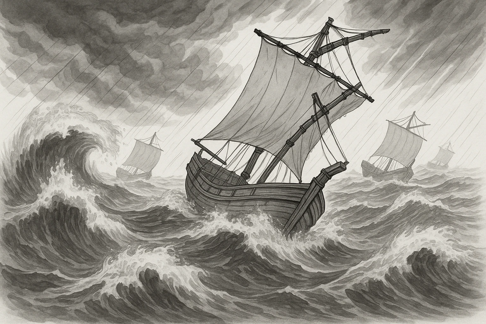

Ⅰ モンゴル襲来 授業ノート1
元、2度にわたって日本を襲う
★ この単元いちばんの頻出
元は朝鮮の
①
高麗
をしたがえ、
1274年
と
1281年
の2回、日本に攻めてきた。
この2度の襲来をまとめて
④
元寇
といい、 このときの執権は
⑤
北条時宗
だった。
1274
②
文永の役
1281
③
弘安の役
2度とも敗退
元軍は集団戦法や火薬で苦しめたが、御家人の奮戦と
暴風雨（神風）
で2度とも引きあげた。順番は
文永(1274)→弘安(1281)
。

第10章 元寇から室町時代
SEED EDUCATION